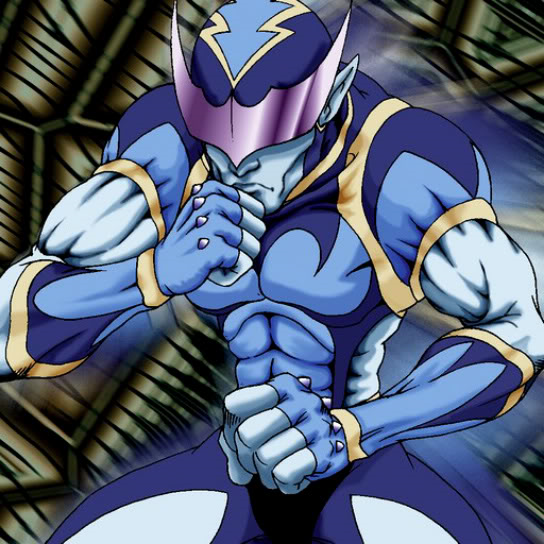

Battle Warrior

Description: "500-pt bonus when battling BEAST monsters."
STATS
ATK: 700
DEF: 1000DECK COST
Deck Cost per Card: 22EFFECT NOT IMPLEMENTED
Fusion List (8 Possible Fusions)
- Battle Warrior + Abyss Flower = Bean Soldier
- Battle Warrior + Corroding Shark = Zombie Warrior
- Battle Warrior + Dancing Elf = Celtic Guardian
- Battle Warrior + Dark Plant = Bean Soldier
- Battle Warrior + Dharma Cannon = Cyber Soldier
- Battle Warrior + Dragon Zombie = Sword Arm of Dragon
- Battle Warrior + Milus Radiant = Tiger Axe
- Battle Warrior + One-Eyed Shield Dragon = Dragon Statue